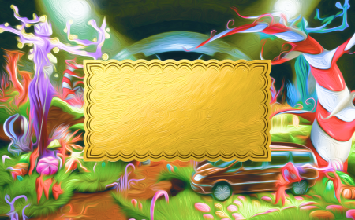
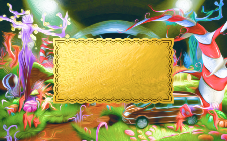

For my project, I am mainly changing my visual design. I plan to add background music to all of my pages and overlays to enchance the experience. I want it to sound magical.
For my start page, the layout will be similar, but I will change the design of my chocolate bar to make it more obvious. My MadLib inputs will be on the back of the bar as nutrition facts.
The most different thing I'm adding is the transition after the user submits the complete MadLib. I will had a transition GIF that lasts for a few seconds before landing on the golden ticket.
On the golden ticket page, the user's MadLib will be placed on the ticket as if they won to enter the factory. Overall, my MadLib will be brighter,include more detailed illustrations, and have different sound playing the background depending on the screen to make my project more immersive.